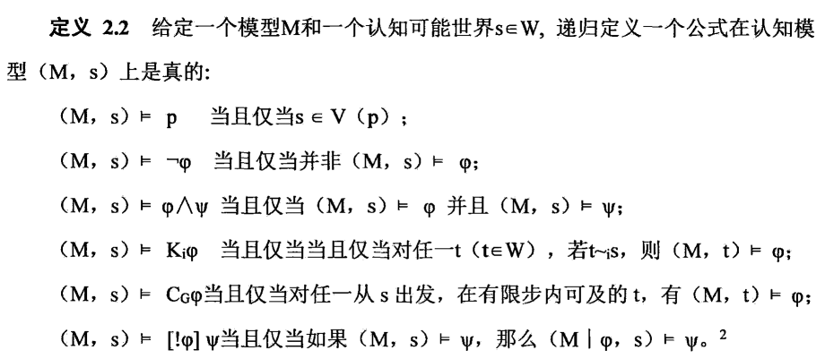
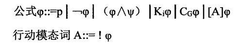

声明：本人受权发布孙玏老师在实习摸鱼期间的最新瞎琢磨。
一 . 蓝眼睛岛和孙玏的迷烟
孙玏上周上班摸鱼的时候重新思考了一下陶哲轩提出的"蓝眼睛岛谜题"（The Blue – eyed Island puzzle），谜题的大意如下——
有一个岛上有一群原住民，他们的瞳色有蓝色和红色两种。他们有两个特别的风俗，第一是岛民之间禁止沟通关于瞳色的问题，第二是一旦某个人确定自己是蓝眼睛，就必须在当晚十二点自杀。这一天，有一个外乡游客来到岛上，惊讶地表示："你们这里竟然有蓝色眼睛的人"。所有的岛民都听到了这句话，那么多少天后，所有蓝眼睛的岛民都会自杀？
对于这个原始版本，解是简单而确定的——假设岛上有m个蓝眼睛人，那么所有蓝眼睛人都会在第m个午夜集体自杀。最基础的解释是，外乡人所说的话将"岛上有蓝眼人"这个命题从弱共识提升为了强共识。
所谓的弱共识就是，我知道，但我不知道别人是否知道，也不知道别人是否知道我是否知道。
而对应的强共识就是，我知道，我知道其他人都知道，我也知道其他人都知道我知道，以此类推无限叠加。
如果没有外乡人的话，即使岛上本身存在很多蓝眼人，每个人都知道有蓝眼人的存在，依然无法形成强共识。因为假设存在两个蓝眼人，他们每个人都会默认自己为红眼人，并进一步默认他观察到的那一个蓝眼人是唯一的、而无法自我认知的蓝眼人。
三个蓝眼人的模型完全一致，每个人都会默认自己是红眼人，并认为另外两人是上述的两人模型，以此类推。
（我们在这里姑且粗糙地使用默认这个说法，实际上，默认这个表述似乎带有确定性的意味，而这是完全错误的，后面我们会推翻它）
在没有形成强共识的情况下，所有人都可以默认自己是红眼人，而一旦形成了强共识——
①假设只有一个蓝眼人，他发现其他人都是红眼，反推自己是蓝眼，于是在当晚自杀。
②假设有两个蓝眼人，每一个人都如前所述默认只有另一个人是蓝眼人，于是第一晚没人自杀，等他们发现对方没有自杀，意识到对方的视角下还存在其他蓝眼人，反推自己是蓝眼，于是都在第二晚自杀。
③假设有三个人，每个人都会默认另外两个人是上述的两人模型，从而在第二晚无人自杀，他们都将认识到自己也是蓝眼，于是在第三晚自杀。
以此类推...
（在此我提前注明，互联网上所有认为这个问题仅是悖论，不存在强弱共识之别、或认为这个问题的根本在于外乡人的话提供了同步的计时等等类似的论点都是放屁，本文最后的逻辑学推导将严格地证明这一点）
上述内容以最通俗的方式给出了蓝眼睛岛问题的解，但陶哲轩在此基础上提出了进阶的问题——如果外乡人意识到自己的错误，他应该怎么做才能拯救更多的岛民？
事实上最简单的方法是——立刻杀死或带走任意一个蓝眼睛岛民。
一旦如此，在两个蓝眼睛人的模型中，幸存者将无法再自我判断，而三个蓝眼睛人的模型中，幸存的两个人都将默认对方和死者是一组两人模型从而用"对方无法自我确认"来解释对方的不自杀行为，更多人的模型同理。
换个角度来看前述的推理，每一个无人死亡的午夜都意味着岛上蓝眼睛人数的下限加一，这意味着如果外乡人意识到自己的错误比较迟，他将不得不杀更多人才能终结自杀的逻辑推理，第n天意识到就必须随机杀死n个人。
但这种做法将把蓝眼睛岛问题变成一个随机杀人的伦理问题，这不是我们的本意，于是孙玏出于拯救所有人的目的，放出了他的迷烟。
假设存在一个迷烟，将全部岛民迷晕，他们将在不同日期醒来，每天清醒一个，直到所有人都醒来为止。岛民互相知道所有人醒来的时间。外乡人说完话后立刻释放迷烟能否拯救所有人？
如果岛上只有一个蓝眼睛的人，显然，无论如何，从外乡人说完话后他就已经意识到了自己是蓝眼睛，因此神仙难救。
但如果有两个人呢？
在这里我们不考虑红眼人的醒来时间问题，因为这实际上与核心推理完全无关。
第一个醒来的蓝眼人将不会有任何动作，因为他默认还没醒的那个才是唯一的蓝眼人，他认为后者会在清醒后的第一夜自杀。
第二个醒来的蓝眼人会发现，在他之前已有一个蓝眼人醒来，但那个人没有立刻自杀；而自己的身后，未醒的人中竟然已经没有蓝眼人了。显然，那个先醒的蓝眼人在等自己，于是，他将在第一夜自杀。
这完全符合第一个人的预计，死亡的推理结束了，只有这个人是蓝眼。
在三个蓝眼人的模型当中，第二个人醒来当天没死，意味着他后面还有蓝眼人没醒，因此第三个醒来的蓝眼人会在醒来后第一夜自杀。在前两个人的视角下，死者都将和自己视线中的另一个蓝眼人构成二人模型，从而使后者无法自我判断而不再自杀。更多人的情况则完全一样。
在n天后再扔出迷烟，倒数n个醒来的蓝眼人都将在醒来后第一晚自杀。
归纳一下可以发现，如果说完话后立刻扔出迷烟，其实我们可以把仅有一个蓝眼人的情况理解为，他本人就是最后醒来的蓝眼人，因此可以说，迷烟事实上仅仅是规定了被杀死的蓝眼人是最后醒来的那一个，虽然救了人，但救人的逻辑与随机杀人终结推理没有本质的区别。
这不能让孙玏满意，他想救所有人。
孙玏认为，从直观上看，获取到的信息越多，可做出的推理越多，能认清自己瞳色的概率也就更高。因此他的改进尝试是——
引入一条新的规定，在醒来后，所有人不得交流对方醒来的时间。
这条规定生效后，先醒来的人仍然知道所有后醒来的人的清醒顺序，但后醒来的人则无法反向得知在自己之前醒来的人的顺序。
回到刚才的讨论：
①在一个两人模型中，后醒来的蓝眼人人B看到一个蓝眼人A，但他面前有两种可能性，一种情况是A早于他一天乃至更多天醒来，在这种情况下B立刻意识到自己也是蓝眼人，因此应该在当晚自杀；另一种情况是A和B同日醒来只不过A醒来的具体时间早于B，那么无法排除A是唯一蓝眼人的可能，B应该等一夜以确认。
因此，最终B在不能确认自己瞳色的情况下，第一夜选择不自杀。而无论A醒来的时间是刚才两种猜测中的哪一种，B不自杀将使A意识到自己也是蓝眼人，因此，A和B将在B醒来后的第二个午夜同时自杀。
②在一个三人模型中，同理于前，他们都将默认自己是红眼人，而另外两人是一个二人模型。他们将在最后一个蓝眼人醒来后经历两个午夜，最终在第三晚集体自杀。
③更多人的情况同理可得，n个蓝眼人，将在最后一个清醒的蓝眼人醒来后的第n晚自杀。
奇怪的是，获取更少的信息，反而使更多岛民判断出自己的瞳色，导致更多人的死亡。
所以现在，问题变成了如下两个——
1.到底有没有拯救所有岛民的方法？
2.为什么更少的信息导致了更强的推理？
二 . 拯救所有人的办法
答案是，在不改变岛上习俗的情况下，确实没有。
唯一拯救所有人的方法是取消自杀时间必须在午夜的规定，而是改为一旦知道自己的瞳色为蓝色就立刻自杀。这将使整个模型中不再存在一个时间单位的步长概念，所有人都会陷入持续盯着他人看的困境而无法找出合适的自杀时间点，因此也就没有人会自杀。
这个方法听起来好像只是一种模糊的感觉，但其本质是如果从模态逻辑出发来看，当时间作为一个变量参与进认知逻辑的模型，也即时间参数t被允许随着一组时间T变化时，每个认知主体（人）都将不仅仅生成一个知识代理，而是生成以t为角标（t∈T）个知识代理。如果时间是无穷延续的，将使知识代理的数量本身也变成不可数的，从而无法得出结论。
上面这段话其实并不重要，只需要直观的感受连续观察的状态下逻辑推导将无法发生就足够了。因为如果我们能修改岛上的习俗，我们最好的方法是直接让他们不再因为瞳色而自杀。
三 . 为什么更少的信息带来了更强的推理
对这个问题的讨论是为了维护如下这个常识——
"更多的信息会带来更强的推理，反之同样。"
通常来说，我们会认为，知道的更多对于推理而言不会是一件坏事，毕竟最坏的结果无非是新的信息对于推理完全无效。但在迷烟模型下，隐瞒醒来的时间顺序反而造成了更多的推理。
要回答这个问题，我们需要先引入一套严谨分析该问题的语言系统。
十七世纪后半叶，莱布尼茨提出"可能世界"理论，并成为现代模态逻辑系统语义理论中的核心概念。可能世界可以被直观地理解为"所有在逻辑上可能的世界"，实际上类似于我们在日常生活中推理时列出的"所有的可能性"。
这个理论在沉寂了漫长的近三百年后，在二十世纪五十年代，坎格尔、欣蒂卡、克里普克等人发展出完整的模态逻辑的语义理论时，被克里普克吸收进了自己的三元组理论。
三元组指(W，I，V)；I指W中个体间的关系，W是可能世界集；V是满足某些条件的赋值，用之解释模态命题演算。
由于我懒得手打一遍公式，在此引用清华大学哲学系桂海斌在其2017年发表的相关领域硕士论文中的定义——
注：第一行"M="后面括号内的三项即为三元组W、I、V；原子命题指不可被写作两个命题的和取的基础命题，比如"我有一个苹果和一个梨"可以被理解为"我有一个苹果 且 我有一个梨"，则该命题不是原子命题。
要对蓝眼睛岛做出最基础的分析，就要使用这套三元组。
下面假设一种最简单的情形来看，蓝眼睛岛共有三个原住民，其中至少有一个人为蓝眼睛（B），其余人为红眼睛（R）。不妨设真实情况是一号岛民和二号岛民均为蓝眼睛，而三号岛民为红眼。
定义认知主体集I=（1，2，3）
→可能世界集W=（RBR,RBB,BRR,BRB,BBB）
（由外乡人的话可知不能是RRR，因此对于任何主体，RRR都不会是其可能的认知世界，对于三号岛民而言，RBR和BRR也可排除，但并不妨碍这应该列入可能世界集，此处的差异将在下面体现）
~1={RBR，BBR}
~2={BRR，BBR}
~3={BBR，BBB}
这分别表示在开始前，三个岛民各自的基础认知。
下面将继续引入公开宣告逻辑PAL的概念，在基础认知逻辑的基础上，添加一个行为算子φ::，即扩充成公开宣告逻辑PAL的语言。在此仍然引用桂海斌老师的定义——
解释：
上述推理要求宣告的命题为真；╞表示满足于；Kiφ表示主体(i)知道(Know)某命题(φ)；Cgφ表示命题φ是所有人(group)的共同认知(common knowledge)；定义2.2只是为了以递归的方式得出最后一行的结论，其中的（M|φ，s）表示滤掉不满足φ命题的可能世界后的新可能世界。
注：上述PAL系统源自范本特姆对普莱赞提出的公开宣告逻辑系统完善化后的给出的语言、语义和公理系统等。
在我们刚才的例子里，第一夜没有人自杀，可以被视为所有岛民都做出了一次"公开宣告"行为，宣告的命题为"我不是唯一的蓝眼人。"
一号和二号岛民都能看到三号岛民是红眼人，因此三号的宣告对他们并不会产生任何意义。而一号收到二号的宣告后，他的认知将发生变化。
在一号岛民刚才的可能世界集~1=（RBR，BBR）中，RBR这种可能世界被滤掉了，因此，新的可能世界集变为了BBR的单元素集。
没有别的可能了，他必须在当晚自杀。二号岛民所经历的思维流程与之完全一致。
把上述过程扩充到更多主体，过程不发生变化，每一轮宣告都在减少可能世界集内元素的数量，直至变为单元素集为止。无论是杀死或者带走一个蓝眼睛人，其本质都是减少了一次宣告，使得这个过滤无法达到终点而已。
这也就是为什么，如果外乡人认识到自己错误晚n天，他就必须多杀n个人才能结束推理，因为必须减少足够次的公开宣告。孙玏的迷烟原理类似，通过分批醒来，使得先醒来的蓝眼人发出宣告，最后醒来的蓝眼人在清醒的第一天就收到多次宣告，确认自己必然是最后的蓝眼人从而自杀。
但由于其本身是蓝眼人的信息是公开的，他的自杀没有传递出任何有效的新知识，从而使先醒来的人永远无法收到后来的宣告，从而终结了推理。
现在，我们就可以理解为什么禁止交流醒来的时间反而会获得更多的推理结论。
因为在这种情况下，更少的信息降低了后醒来者过滤可能世界的速度，他必须考虑，其他醒着的人是否是和自己同一天醒，换言之，是已经完成了至少一次宣告还是尚未完成。
这使得，最后醒来的蓝眼人在第一次入夜时，无法收到有效的宣告，从而不得不选择等待一夜。而他的等待本身，就是将把所有人拖入死亡的致命宣告。这次宣告使common knowledge增加，从而启动了之前所有被搁置的推理进程。
后面的过程可以近似于，把最后醒来的蓝眼人当做外乡人，他通过行为指出其他岛民中存在蓝眼睛者，这就回到了最原始的命题。
这维护了我们最开始的常识观察——
更少的信息→更弱的推理→没有排除可能世界
→行为变化→行为变化宣告更多的信息→
更强的推理→最终排除所有其他可能世界
四 . 模态逻辑的意义
从亚里士多德开始，逻辑学就一直在关注静态的逻辑推导，但在现代逻辑学家看来，随着对人类认知问题研究的深入，人类的信息收集、处理，以及在推理发生前对认知模式的建立，这些过程变得越来越重要。
模态逻辑正是逻辑学中，试图用数理语言，去处理那些用模态限定的句子逻辑的分支。模态包括可能、或许、可以、一定、必然，甚至包括希望、要求、应该等等。认知逻辑、义务逻辑、时态逻辑、道义逻辑，都是模态逻辑研究的方向。
我们今天用到的PAL公开宣告逻辑的创建者
最近几年从alphoGO到chatGPT，AI突然又火爆起来，似乎越来越多的人开始认为AI就是海量数据+深度学习，就是概率论、贝叶斯...但事实上，基于概率分析永远不可能产生真正的"intelligence"，没有逻辑作为基础，就没有真正的认知。
所以，UCLA统计学和计算机科学教授朱松纯2016年去英国的时候，曾在威斯敏斯特大教堂看过牛顿和达尔文的墓穴，他感慨，那两座墓穴之间相距只有几米，但想要统合生物智能天生的价值链和人造物基于物理的因果链，不知道需要多久。
模态逻辑就是在为这件事做贡献的研究之一。
这是第无数次，哲学在你看不到的地方影响整个世界。
五 . 顺便
关于蓝眼睛岛谜题，陶哲轩本人2011年在他的博客上给出了更完备和严谨的解答，同样是基于模态逻辑做出的，如有兴趣，链接照例放在这里。